Domination
Domination
Domination是一個泛稱，專指「支配鄰近元件」這一類的圖論主題，例如Packing與Covering。
「填裝Packing」是使用一種元件，填滿圖上全部的點、或者邊。元件用量越多越好。
例如選一些點，但是互不相鄰，稱作Independent Set。
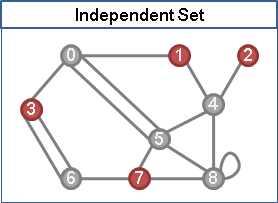「覆蓋Covering」是使用一種元件，蓋住圖上全部的點、或者邊。元件用量越少越好。
例如拿一些點，蓋住所有鄰點，稱作Dominating Set；例如拿一些點，蓋住所有邊，叫做Vertex Cover；例如拿一些邊，蓋住所有點，叫做Edge Cover。
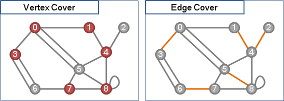Independent Set
Independent Set
無向圖上，選定數點，互不相鄰，稱作「獨立集」。
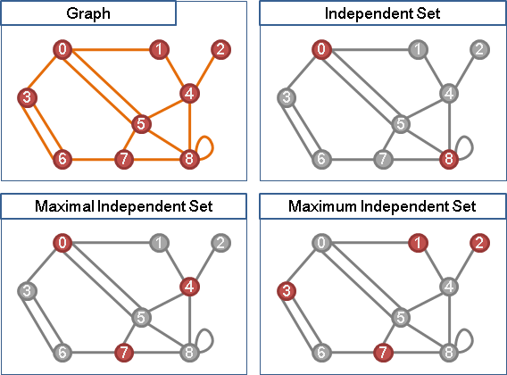各點之間不相鄰，換到補圖上面就是，各點之間都有邊。原圖的Clique，就是補圖的Independent Set；原圖的Independent Set，就是補圖的Clique。
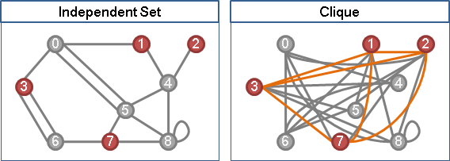Maximum Independent Set [NP-complete] 無向圖上，點數最多的Maximum Independent Set。 Maximum Independent Set in Tree [P] 當給定的圖是樹，得利用Greedy Method求解。 Maximum Independent Set in Bipartite Graph [P] 當給定的圖是二分圖，得利用Maximum Cardinality Bipartite Matching求解。
UVa 193 11065 11069 1220
Independent Edge Set（Matching）
無向圖上，選定數邊，互不相鄰，稱作「邊獨立集」。正是先前介紹的「匹配」。
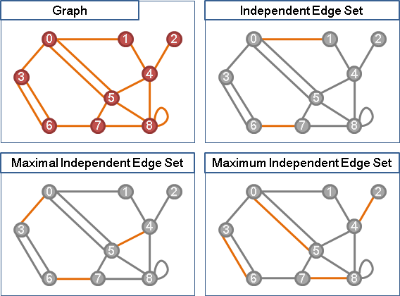Maximum Independent Set
由於是NP-complete問題，目前沒有多項式時間演算法。
一般都是採用Backtracking計算Maximum Independent Set。亦得改為計算Maximum Clique，請參考本站文件「Clique」。
Maximum Independent Set in Tree
以邊邊角角的點作為最大獨立集，似乎還不錯。
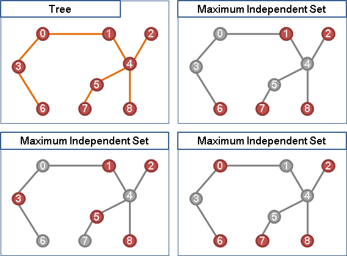在樹上，邊邊角角的點就是樹葉。運用Divide and Conquer，觀察樹葉及其鄰點，將問題分割成四種情況：
一、樹葉與父親都是最大獨立集：不成立。 二、樹葉與父親都不是最大獨立集：那不如採用三或四，獨立集更大。 三、樹葉是，父親不是：可以一試。 四、樹葉不是，父親是：可以一試。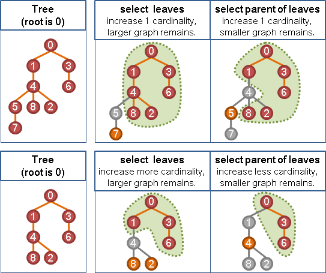
以樹葉作為最大獨立集，不但填裝比較多點，而且剩餘的圖比較大張、得以填裝更多點！
於是發現了一個Greedy演算法：由樹葉往樹根方向選出獨立集，儘量選擇樹葉，最後就得到最大獨立集。不過這種方式無法得到字典順序最小的最大獨立集。
時間複雜度等同於一次Graph Traversal的時間。
一、建立DFS Tree，找出preorder。 二、以preorder的逆序，選出Independent Set。
一、建立BFS tree，找出levelorder。 二、以levelorder的逆序，選出Independent Set。
Maximum Independent Set in Bipartite Graph
二分圖當中，「最大點獨立集」與「最大邊獨立集」關係密切！
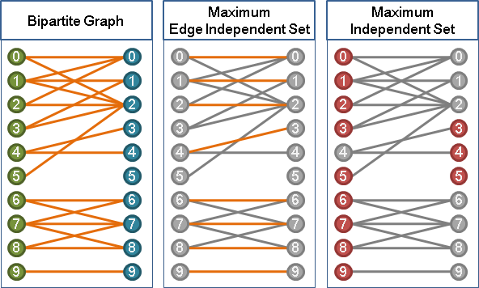 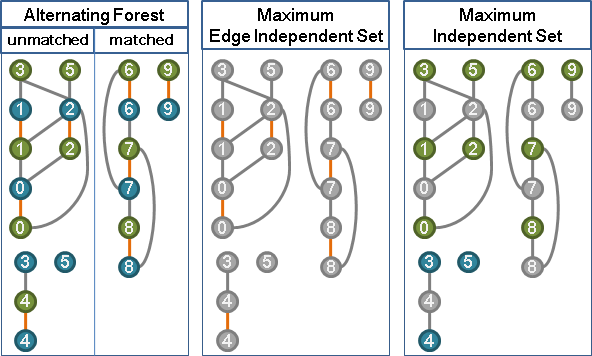首先找到最大二分匹配，可以分類成三種情況：
甲、X側未匹配點的交錯樹們。 乙、Y側未匹配點的交錯樹們。 丙、皆是已匹配點的交錯環們（包含單獨的匹配邊）。
這三個情況互不干涉，是數塊連通分量。用Graph Traversal建立甲、乙的交錯樹們，剩下部分就是丙。
在二分圖上，邊邊角角的點就是交錯樹的樹葉，而交錯樹的樹葉總是位於偶數距離。要找最大點獨立集，甲、乙是取盡偶數距離的點，丙是取盡偶數距離的點、或者是取盡奇數距離的點，每塊連通分量可以各自為政。最大獨立集的大小，就是匹配邊的數量加上未匹配點的數量。小心處理的話，可以得到字典順序最小的最大獨立集。
已經有最大二分匹配時，求最大點獨立集的時間複雜度等同於一次Graph Traversal的時間。
Dominating Set
Dominating Set
無向圖上，選定數點，其餘點皆與之相鄰，稱作「支配集」。
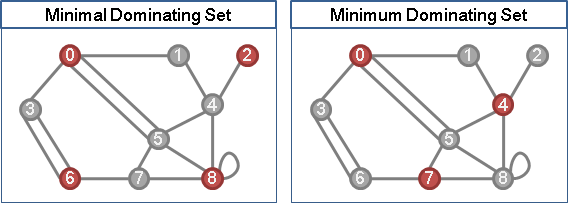Minimum Dominating Set [NP-complete] 無向圖上點數最少的Dominating Set。 Minimum Dominating Set in Tree [P] 當給定的圖是樹，得利用DP求解。 Minimum Dominating Set in Bipartite Graph [NP-complete] 當給定的圖是二分圖。
UVa 10160 1218
Edge Dominating Set
無向圖上，選定數邊，其餘邊皆與之相鄰，稱作「邊支配集」。
Minimum Edge Dominating Set [NP-hard] 無向圖上邊數最少的Edge Dominating Set。
Independent Set與Dominating Set
independent set 獨立集。選出一些點，互不相鄰。最佳化問題是越多越好。 dominating set 支配集。選出一些點，其餘點皆與之相鄰。最佳化問題是越少越好。
maximal independent set 極大獨立集。無法再選出一些點的獨立集。 maximum independent set 最大獨立集。點數最多的獨立集（點數最多的極大獨立集）。
極大獨立集，必是支配集、必是極小支配集。
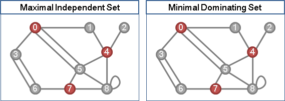極小支配集，不一定是獨立集、不一定是極大獨立集。
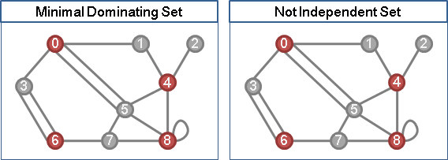延伸閱讀：Independent Dominating Set
「獨立支配集」。既是支配集、又是獨立集。
延伸閱讀：Irredundant Set
每一個選定的點，至少都有一個只有自己才能支配到的點。自己可以支配自己。
Maximal Irredundant Set = Minimal Dominating Set，一一對應。
Vertex Cover
Vertex Cover
一張無向圖上，挑選數個點，碰觸到所有邊，這些點就叫做一個「點覆蓋」，可能有許多種。換句話說，每一條邊，都會碰觸到一個以上的選定點。
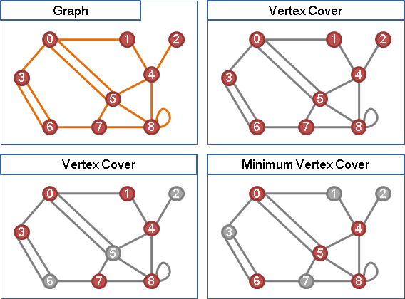點覆蓋，就像是紙鎮，壓住了所有邊，讓邊不會被吹走。
點覆蓋，一個點集合，這些點會是圖上每一條邊，其中一端或兩端的端點。
Minimum Vertex Cover [NP-complete] 一張圖上點數最少的Vertex Cover。 Minimum Vertex Cover in Tree [P] 當給定的圖是樹，得利用Greedy演算法，從樹葉往樹根方向選出節點。 Minimum Vertex Cover in Bipartite Graph [P] 當給定的圖是二分圖，得化作Maximum Cardinality Bipartite Matching解決。
UVa 10243 10859 10984 11419 11095 ICPC 2897
Edge Cover
Edge Cover
一張無向圖上，挑選數條邊，碰觸到所有點，這些邊就叫做一個「邊覆蓋」，可能有許多種。
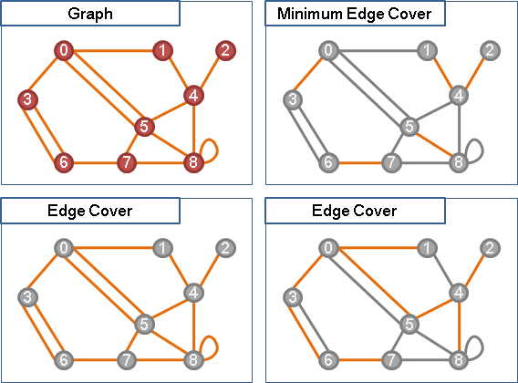Minimum Edge Cover [P] 一張圖上邊數最少的Edge Cover。 得化作Maximum Matching解決。 Minimum Edge Cover in Bipartite Graph [P] 當給定的圖是二分圖，得利用Greedy演算法，優先覆蓋degree最小的點。 Minimum/Maximum Weight Edge Cover [P] 一張圖上權重最小（大）的Edge Cover。 得化作Minimum/Minimum Weight Matching解決。【待補文字】
UVa 10349
Minimum Edge Cover
首先在圖上求得一個Maximum Matching之後，對於那些單身的點，都由匹配點連過去。如此便形成了Minimum Edge Cover。
Packing與Covering
一般圖，Packing與Covering相互對應。
General Graph: |Maximum Independent Set| + |Minimum Vertex Cover| = |V| |Maximum Independent Edge Set| + |Minimum Edge Cover| = |V| 各種點獨立集、各種點覆蓋，恰好互補，一一對應。 最大點獨立集、最小點覆蓋，兩者當然也是互補。 各種邊獨立集（匹配）、各種邊覆蓋，沒有互補，沒有一一對應、。 最大邊獨立集（最大匹配）、最小邊覆蓋，兩者幾乎相等，差異是未匹配點所連接的邊。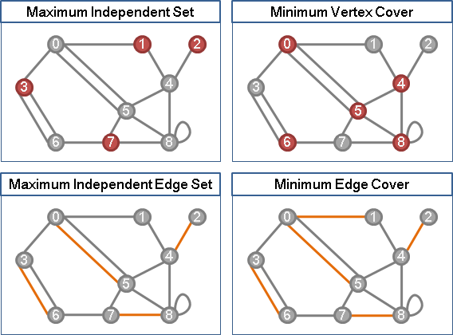
引入Clique。Clique、Independent Set、Vertex Cover，三者等價，可以互相轉換。
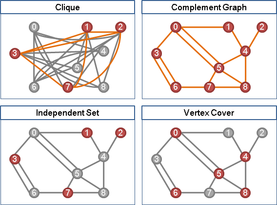Packing與Covering in Bipartite Graph
二分圖，性質更強。König's Theorem。
Bipartite Graph:
|Maximum Independent Set| = |Minimum Edge Cover|
|Maximum Independent Edge Set| = |Minimum Vertex Cover|
|Maximum Independent Set| + |Minimum Vertex Cover| = |V|
+ +
|Maximum Independent Edge Set| + |Minimum Edge Cover| = |V|
|| ||
|V| |V|
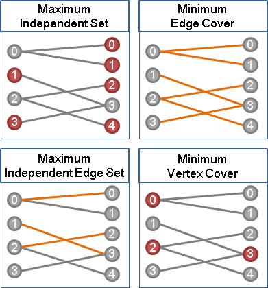
引入Biclique。Biclique、Independent Set、Vertex Cover，三者等價，可以互相轉換。
最佳化問題當中，此三者與Edge Cover、Independent Edge Set = Matching，五者等價，可以互相轉換，都可以套用s-t Cut、s-t Flow解決。
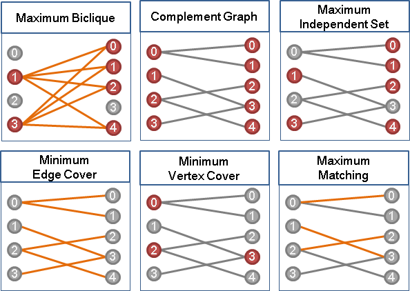UVa 11159 12083 12168 ICPC 6309
Path Domination
概論
問題有兩種：Packing、Covering。 支配元件有兩種：路徑、環。 支配元件限制有兩種：點不重覆（邊亦然）、邊不重覆。 被支配元件有兩種：所有點、所有邊（點亦然）。 最佳化有四種：支配的路徑數量、路徑長度、單一路徑長度；被支配的點（邊）數量。
總共2*2*2*2*4種組合，並不是全部都具備討論意義。以下列出我遭遇過的組合，也歡迎大家提供其他組合的題目。
Packing系列
{Minimum Cardinality} Vertex-disjoint Path + Vertex + Packing
Graph [NP-hard] 等同許多條Hamilton Path。
Tree [Linear] Greedy。從樹葉往樹根方向選出路徑。
建立BFS Tree。
以levelorder的逆序拜訪各點。
如果該點的鄰邊超過二條，
就隨意留下兩條連往小孩的邊，刪除其餘鄰邊。
DAG [P] 化作Maximum Cardinality Bipartite Matching。
DAG的邊i->j，對應到二分圖的邊Xi->Yj。
當匹配數越大，則尾端端點越少，則路徑數也越少。
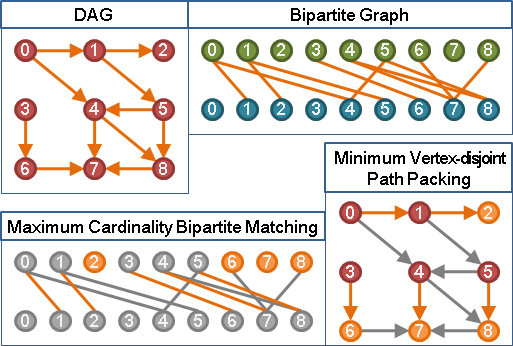
UVa 11381 12831
{Maximum/Minimum Weight} Vertex-disjoint Path + Vertex + Packing
Graph [NP-hard] 等同許多條Hamilton Path。
Tree [P] Dynamic Programming。從樹葉往樹根方向遞歸。
DAG [P] 化作Maximum Weight Bipartite Matching。
ICPC 4141
{Minimum/Maximum Weight} Vertex-disjoint Cycle + Vertex + Packing
Graph [P] 即是Minimum/Maximum Weight 2-Factor。
Digraph [P] 化作Maximum/Minimum Weight Perfect Bipartite Matching。
DAG的邊i->j，對應到二分圖的邊Xi->Yj。
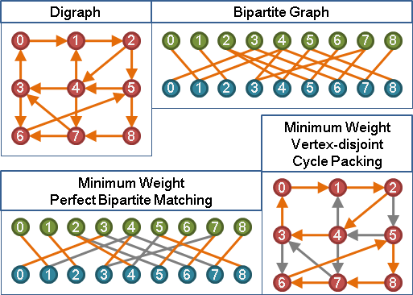
ICPC 3353 7463
{Minimum Cardinality} Edge-disjoint Path + Edge + Packing
Graph [P] 等同許多條Euler Trail。
無向圖：不斷以奇點作為路徑起點。答案為奇點數目的一半。
有向圖：出邊多於入邊的點，走向入邊多於出邊的點。
UVa 10248
{Minimum/Maximum Weight} Edge-disjoint Path + Edge + Packing
Graph [P] 其實就是整張圖所有邊的權重總和。trivial。
{Minimum/Maximum Weight} Edge-disjoint Cycle + Edge + Packing
Graph [P] Minimum Cost Flow。
ICPC 4030
Covering系列
{Minimum Cardinality} Vertex-disjoint Path + Edge + Covering
Graph [P] Minimum s-t Flow。源點連至沒有入邊的點，沒有出邊的點連至匯點。
UVa 1440 ICPC 4597
Cycle Double Cover Conjecture